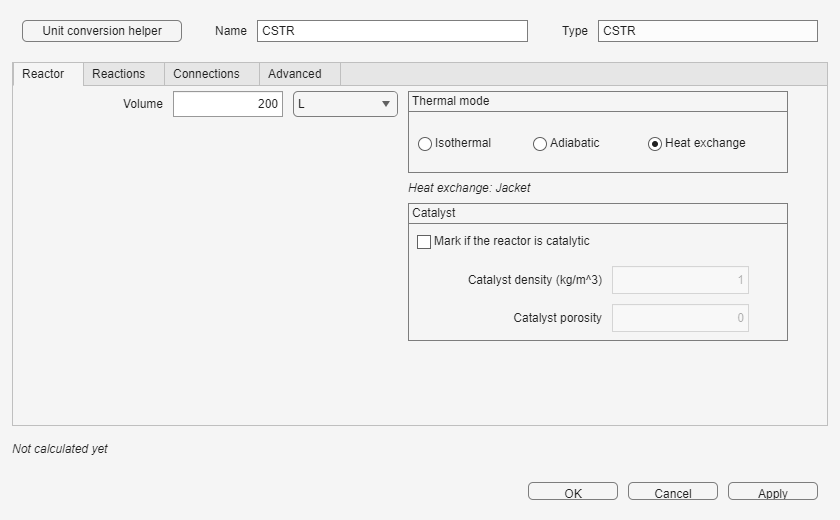

Field colors and the status line show whether each unit has the right number of independent specifications.
Connect the block and, when possible, define its inlet Feed. Inlet-dependent values may remain neutral until a source or previous successful Run is available.
Enter the independent information you know and leave the value that should be deduced empty. The window recalculates simple relations immediately after each edit. A value from a directly connected, defined Feed is used first; otherwise the latest successful Run is used. If neither is available, inlet-dependent results wait for a Run or a defined Feed.
| Appearance | Meaning | Action |
|---|---|---|
| Pink, empty | A required user specification is missing. | Enter one independent value. |
| Dark blue text | You specified this value. | It is kept and takes priority during every Run. |
| Light gray, italic | The value was calculated from other entries. | Clear one of the blue entries if you want to specify this one instead. |
| Neutral gray | The value comes from a connection or needs an inlet from a Run or a defined Feed. | Define or connect the source; the tooltip explains what is needed. |
| Red | The specifications conflict, are out of range, or provide too many independent values. | Clear one of the implicated specifications before applying or running. |
The status line reports both specification closure and the latest simulation state. It distinguishes missing, complete, and conflicting specifications, then says whether the block has been calculated. Small values use significant digits, so a nonzero value is not hidden by fixed decimal places.

Specifications remain in force during Run, including while a recycle is converging. For example, if residence time is specified in a CSTR, its volume is recalculated from the changing inlet flow at every recycle iteration. To specify the total flow of an outlet, open that outlet Stream, enter the value in Specifications, and apply it; the producing Splitter or Separator then uses it.
Once all block status lines are complete, run the model and inspect unit, Stream, convergence, and message results.